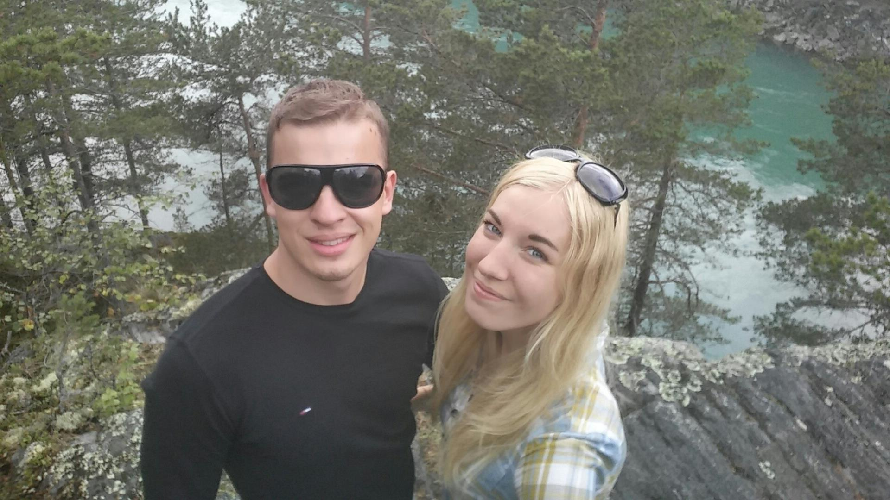

Minu nimi on Jaanus. Olen pärit Võrust. Hetkel elan Tartus ja õpin Tartu Ülikoolis informaatikat
1. kursusel. Põhikooli lõpetasin Parksepa Keskkooli, edasi läksin õppima Tartu Kutsehariduskeskusesse Tarkvara ja andmebaaside haldust.
Sealt omandasin noorem IT-spetsialisti kutsetunnistuse. Edasi läksin ma kaheks aastaks Austraaliasse elama/töötama.
Peale Austraaliat liikusin edasi aastaks Inglismaale. Peale Inglismaad otsustasin tagasi koju tulla ja siin ma nüüd olen
Minu CV
Olen sündinud Võrus, kasvanud Võrus ja seal on mu vanematekodu. Käisin Parksepa lasteaias ja astusin peale
seda Parksepa Keskkooli. Käisin seal kuni 10nda klassini, aga siis otsustasin, et tahan hoopis kutset õppida.
Peale 10ndat klassi läksin Tartu Kutsehariduskeskusesse õppima Tarkvara ja andmebaaside haldust. Kutsekoolis
omandasin noorem informaatiku 3. taseme kutsetunnistuse. Peale kooli lõpetamist läksin sel samal suvel
Austraaliasse. Austraalias veetsin 2 aastat töötades enamus aega erinevates kaevandustes. Elu seal oli väga
positiivne kogemus, sain hulgaliselt toredaid mälestusi. Sellele järgenevalt olin mõned kuud Eestis ja peale
seda läksin edasi Inglismaale, kus ma töötasin aasta. Sarnaselt Austraaliale meeldis mulle elu ka Inglismaal.
Lõpuks otsustasin tulla tagasi kodumaale. Olles Eestis asusin tööle venna juurde graanulitehasesse ja olin
seal mõnda aega. Üks moment sain aru, et tahan siiski jätkata enda IT kutsumust. Sel sügisel astusin Tartu
Ülikooli, kus ma nüüd õpin 1. kursusel. Elu parim otsus.
Olen spordiga tegelenud kogu oma elu. Noorena alustasin judoga, kus ma käisin umbes 4 aastat.
Peale seda otsustasin minna karate trenni, kus käisin samuti 4 aastat. Ning võitluskunstidest olen veel
tegelenud kickboxiga umbes aasta. Nooremana Võrus elades tegelesin iga suvi amatöörtasemel jalgpalliga
mängides väravavahi positsiooni. Välismaal hakkasin rohkem tegelema jalgrattaspordi ja jooksmisega.
Jalgrattaspordiga ja jooksmisega tegelen siiamaani. Sõidan maantee- ja hübriidratast. Iga suvi võtan osa
Võru pikkamaajooksu sarjast. See sari ongi 1 peamine põhjus, miks ma jooksmas käin, kuna see jooksusari
on lihtsalt nii motiveeriv ja jooksud on väga lahedad.
Telefon:
555555555
Email:
jaanusraudsik@gmail.com
Facebook:
https://www.facebook.com/jaanus.raudsik